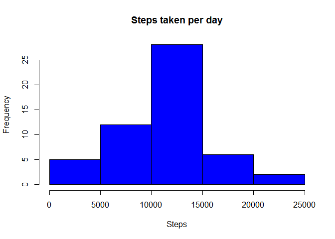

Reproducible Research: Peer Assessment 1
Loading and preprocessing the data
## Unzip the archive if necessary
if(! file.exists("activity.csv")) {
unzip("activity.zip")
}
## Read the csv data
raw_data <- read.csv("activity.csv")
## Aggregate the raw data as sum of steps per day
total_steps_per_day <- aggregate(steps ~ date, data = raw_data, FUN=sum)
## Aggregate the raw data as average of steps per interval
average_steps_per_interval <- aggregate(steps ~ interval, data = raw_data, FUN=mean)What is mean total number of steps taken per day?
## Draw a histogram of the steps recorded per day
hist(total_steps_per_day$steps, main = "Steps taken per day", xlab = "Steps", col="blue")
## Calculate the mean and median values of the steps recorded per day
mean_steps_per_day <- mean(steps_per_day$steps, na.rm = FALSE)
median_steps_per_day <- median(steps_per_day$steps, na.rm = FALSE)The mean of the recorded step data per day is 10766.19 (rounded to two decimal places). The median of the recorded step data per day is 10765.
What is the average daily activity pattern?
## Draw a line graph of the steps recorded per interval
with(average_steps_per_interval,
plot(interval, steps, type = "n",
main = "Steps taken per interval",
xlab = "Interval", ylab = "Steps"))
with(average_steps_per_interval, lines(interval, steps, type="l"))
## Subset the interval with most steps
max_steps <- max(average_steps_per_interval$steps)
max_interval <- subset(steps_per_interval, steps == max_steps)$intervalThe interval with most steps is interval with 206.1698 recorded steps on average (rounded to four decimal places).
Imputing missing values
## Count the number of NA data points
number_na <- sum(is.na(raw_data$steps))There are 2304 invalid data points in the data set.
To compensate for those unrecorded data points, we’re calculating a derived data set, where invalid values are replaced by the mean for the respective interval.
## Aggregate a data set of mean steps per interval
mean_steps_per_interval <- aggregate(steps ~ interval, data = raw_data, FUN=mean)
## Copy the data set
imputed_data <- raw_data
## For each interval, replace the NA values with the mean for the interval
for(interval in mean_steps_per_interval$interval) {
## Subset and round the mean for the interval
interval_mean <- mean_steps_per_interval[mean_steps_per_interval$interval == interval, 2]
rounded_mean <- round(interval_mean)
## Replace all NA values
imputed_data[is.na(imputed_data$steps) & imputed_data$interval == interval, 1] <- rounded_mean
}
## Aggregate the imputed data as sum of steps per day
imputed_steps_per_day <- aggregate(steps ~ date, data = imputed_data, FUN=sum)
## Draw a histogram of the steps recorded per day
hist(imputed_steps_per_day$steps, main = "Steps taken per day (with imputed data)", xlab = "Steps", col="blue")
## Calculate the mean and median values of the steps recorded per day
imputed_mean_steps_per_day <- mean(imputed_steps_per_day$steps, na.rm = FALSE)
imputed_median_steps_per_day <- median(imputed_steps_per_day$steps, na.rm = FALSE)The mean of the recorded step data per day is 10765.64 (rounded to two decimal places). The median of the recorded step data per day is 10762 (rounded).
Since invalid data has the same impact to a sum as a zero-value, the histogram with imputed points shows higher frequencies (representing higher daily step sums) than the histogram based on the data set with invalid data points in it. The median and mean however are almost unchanged, since the invalid values don’t influenced their calculation in neither data set.
Are there differences in activity patterns between weekdays and weekends?
The weekdays have a significant spike in the morning and a few less prominent spikes during typical break or knocking-off times. The weekend seems quite balanced during the day in comparison, especially in the morning.
## Add a weekend indicator variable to the raw data set
wday_classifier <- c("weekend", "weekday", "weekday", "weekday", "weekday", "weekday", "weekend")
raw_data$weekend_indicator <- wday_classifier[as.POSIXlt(raw_data$date)$wday + 1]
## Aggregate the raw data as sum of steps per interval
steps_per_interval_compared <- aggregate(steps ~ interval + weekend_indicator,
data = raw_data, FUN=mean) ## We use the lattice system for this graph
library(lattice)
## Draw line graphs of the steps recorded per interval, grouped by weekend indicator
xyplot(steps ~ interval | weekend_indicator, data = steps_per_interval_compared, type = "l",
layout = c(1, 2))